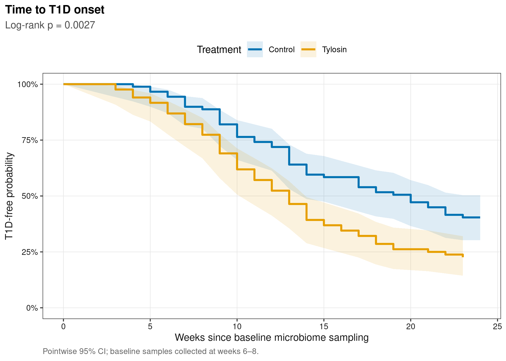
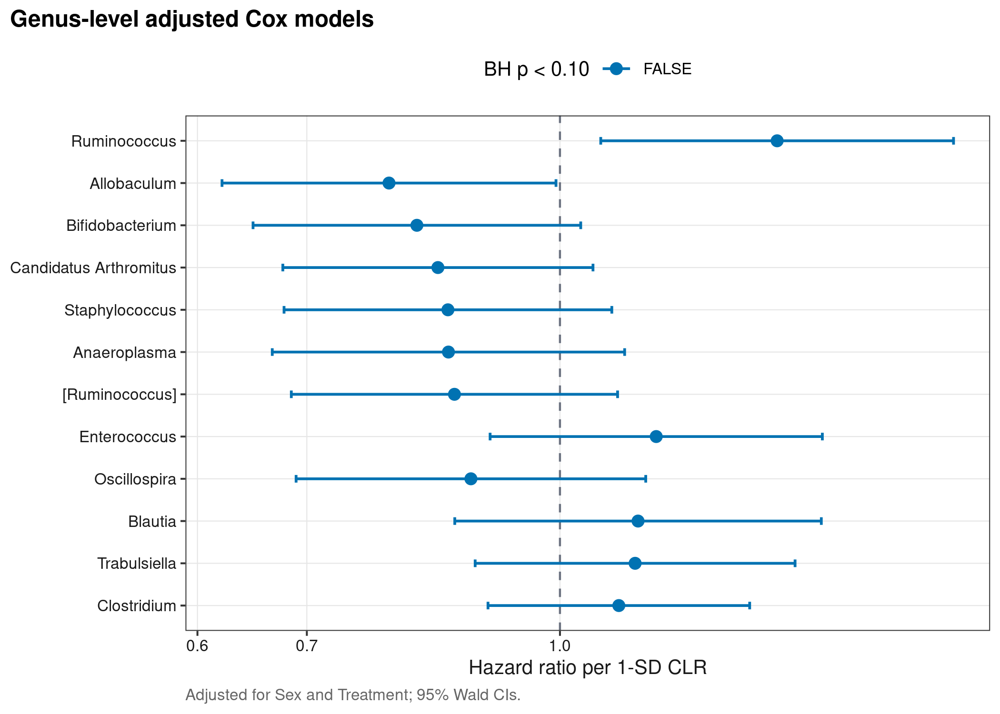
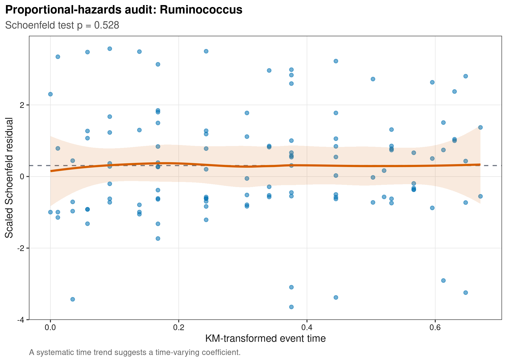
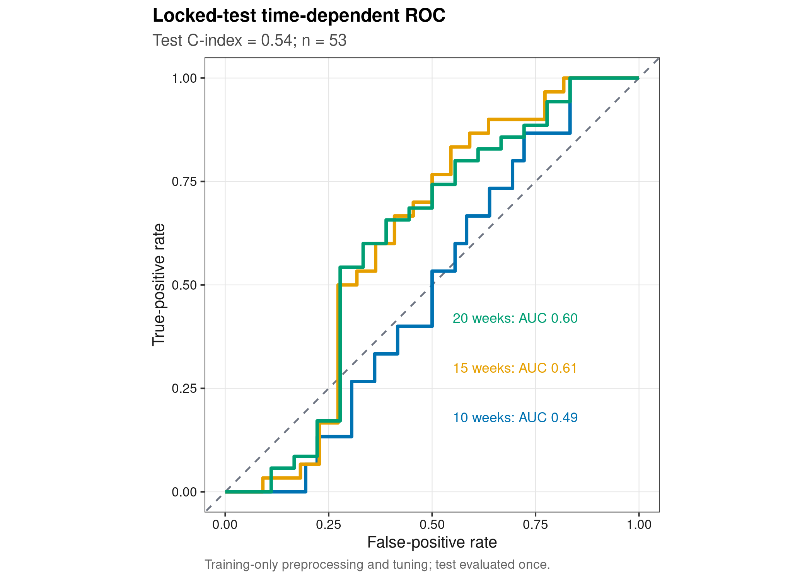

options(timeout = 600)
data_url <- "https://raw.githubusercontent.com/petemeng/microbiome-best-practices/3cb6a817e0c73ab7ecbec1cedc1ad80cbb9ecfaa/"
input_files <- c(
"data/small/survival-t1d/metadata.tsv",
"data/small/survival-t1d/otutab.tsv",
"data/small/survival-t1d/source-summary.json",
"data/small/survival-t1d/taxonomy.tsv"
)
for (path in input_files) {
dir.create(dirname(path), recursive = TRUE, showWarnings = FALSE)
if (!file.exists(path)) download.file(paste0(data_url, path), path, mode = "wb", quiet = TRUE)
}微生物组与时间结局：Cox、Kaplan–Meier 与时间依赖 ROC
重要这类分析比普通三件套多需要什么
每个样本还必须有：FollowUpTime、Event（1=发生目标事件，0=右删失）、明确的 time origin，以及准备调整的临床/实验 covariates。只有 case/control 标签不能做 survival analysis；把随访末是否患病当普通二分类会丢失 censoring 与事件时间。
时间结局分析需要同时定义起点、事件和删失
Zhang et al. (2018)研究 early-life antibiotics、gut microbiome 与 NOD mice type 1 diabetes development；Gu et al. (2023)基于该公开数据提出 MiSurv。以下分析使用 6–8-week baseline 16S tables，依次检查 treatment KM、adjusted genus HR、PH diagnostic 与 锁定测试集 time-dependent ROC。
警告结局边界
这里的 event 是 NOD 小鼠 T1D 起病，不是人类死亡、overall survival 或临床无进展生存。示例展示统计接口；把代码迁移到人群研究时，必须重新定义 time origin、competing events、loss to follow-up 与 covariates。
下载并读取本次分析的数据
需要 R，以及 ggplot2、glmnet、ragg、readr、scales、survival、svglite、timeROC。本次使用微生物组三张表；样本信息还包含随访时间、事件与删失信息。
在一个新建的文件夹中运行以下代码，下载文件后按文中的顺序继续分析：
library(ggplot2)
library(survival)
set.seed(20260745)
font_pub <- "sans"
pal_pub <- c(
blue = "#0072B2", orange = "#E69F00", green = "#009E73",
vermillion = "#D55E00", purple = "#CC79A7", sky = "#56B4E9",
yellow = "#F0E442", grey = "#6B7280"
)
scale_color_pub <- function(..., values = unname(pal_pub)) ggplot2::scale_color_manual(..., values = values)
scale_fill_pub <- function(..., values = unname(pal_pub)) ggplot2::scale_fill_manual(..., values = values)
theme_pub <- function(base_size = 10, base_family = font_pub) {
ggplot2::theme_bw(base_size = base_size, base_family = base_family) +
ggplot2::theme(
panel.grid.minor = ggplot2::element_blank(),
panel.grid.major = ggplot2::element_line(colour = "#E6E6E6", linewidth = 0.25),
axis.text = ggplot2::element_text(colour = "#1A1A1A"),
axis.title = ggplot2::element_text(colour = "#1A1A1A"),
plot.title.position = "plot",
plot.title = ggplot2::element_text(face = "bold", size = ggplot2::rel(1.15)),
plot.subtitle = ggplot2::element_text(colour = "#4D4D4D"),
plot.caption = ggplot2::element_text(colour = "#666666", hjust = 0),
strip.background = ggplot2::element_rect(fill = "#F2F2F2", colour = "#B3B3B3"),
strip.text = ggplot2::element_text(face = "bold"),
legend.key = ggplot2::element_blank(), legend.position = "top"
)
}
save_pub <- function(plot, file_base, width = 89, height = 70, units = "mm", dpi = 600) {
dir.create(dirname(file_base), recursive = TRUE, showWarnings = FALSE)
ggplot2::ggsave(paste0(file_base, ".pdf"), plot, width = width, height = height,
units = units, device = grDevices::cairo_pdf, family = font_pub, bg = "white")
ggplot2::ggsave(paste0(file_base, ".svg"), plot, width = width, height = height,
units = units, device = svglite::svglite, bg = "white")
ggplot2::ggsave(paste0(file_base, ".png"), plot, width = width, height = height,
units = units, dpi = dpi, device = ragg::agg_png, bg = "white")
ggplot2::ggsave(paste0(file_base, ".tiff"), plot, width = width, height = height,
units = units, dpi = dpi, device = ragg::agg_tiff,
compression = "lzw", bg = "white")
invisible(plot)
}读取三件套，并确定随访起点
read_keyed_tsv <- function(path) {
x <- readr::read_tsv(path, show_col_types = FALSE, progress = FALSE,
name_repair = "minimal", na = character())
ids <- as.character(x[[1L]])
stopifnot(!anyDuplicated(ids))
out <- as.data.frame(x[-1L], check.names = FALSE)
rownames(out) <- ids
out
}
data_dir <- "data/small/survival-t1d"
otutab_raw <- read_keyed_tsv(file.path(data_dir, "otutab.tsv"))
taxonomy <- read_keyed_tsv(file.path(data_dir, "taxonomy.tsv"))
metadata <- read_keyed_tsv(file.path(data_dir, "metadata.tsv"))
otutab <- as.matrix(data.frame(lapply(otutab_raw, as.integer), check.names = FALSE))
rownames(otutab) <- rownames(otutab_raw)
otutab <- otutab[, rownames(metadata), drop = FALSE]
metadata$TimeWeeks <- as.numeric(metadata$TimeWeeks)
metadata$SamplingWeek <- as.numeric(metadata$SamplingWeek)
metadata$FollowUpWeeks <- as.numeric(metadata$FollowUpWeeks)
metadata$Event <- as.integer(metadata$Event)
metadata$Sex <- relevel(factor(metadata$Sex), ref = "F")
metadata$Treatment <- relevel(factor(metadata$Treatment), ref = "Control")
stopifnot(
nrow(otutab) == 348L, ncol(otutab) == 173L, sum(otutab) == 3073108L,
sum(metadata$Event) == 118L, sum(metadata$Event == 0L) == 55L,
all(metadata$FollowUpWeeks > 0),
identical(sort(unique(metadata$SamplingWeek)), c(6, 7, 8)),
all(metadata$FollowUpWeeks == metadata$TimeWeeks - metadata$SamplingWeek),
identical(colnames(otutab), rownames(metadata))
)
head(otutab[, 1:5])
head(taxonomy)
head(metadata) JP105F7W JP51F7W JP64F7W JP66F7W JP77F7W
New.0.CleanUp.ReferenceOTU62556 1 0 0 0 0
363731 5 5 0 2 0
178331 9 6 0 0 0
4306262 14679 9762 278 643 580
New.0.CleanUp.ReferenceOTU51825 0 0 0 0 0
588471 0 0 0 0 0
Kingdom Phylum Class
New.0.CleanUp.ReferenceOTU62556 Bacteria Verrucomicrobia Verrucomicrobiae
363731 Bacteria Verrucomicrobia Verrucomicrobiae
178331 Bacteria Verrucomicrobia Verrucomicrobiae
4306262 Bacteria Verrucomicrobia Verrucomicrobiae
New.0.CleanUp.ReferenceOTU51825 Bacteria Verrucomicrobia Verrucomicrobiae
588471 Bacteria Verrucomicrobia Verrucomicrobiae
Order Family
New.0.CleanUp.ReferenceOTU62556 Verrucomicrobiales Verrucomicrobiaceae
363731 Verrucomicrobiales Verrucomicrobiaceae
178331 Verrucomicrobiales Verrucomicrobiaceae
4306262 Verrucomicrobiales Verrucomicrobiaceae
New.0.CleanUp.ReferenceOTU51825 Verrucomicrobiales Verrucomicrobiaceae
588471 Verrucomicrobiales Verrucomicrobiaceae
Genus Species
New.0.CleanUp.ReferenceOTU62556 Akkermansia muciniphila
363731 Akkermansia muciniphila
178331 Akkermansia muciniphila
4306262 Akkermansia muciniphila
New.0.CleanUp.ReferenceOTU51825 Akkermansia muciniphila
588471 Akkermansia muciniphila
TimeWeeks SamplingWeek FollowUpWeeks Event Sex Treatment
JP105F7W 11 7 4 1 M Tylosin
JP51F7W 20 7 13 1 M Control
JP64F7W 24 7 17 1 F Control
JP66F7W 30 7 23 0 F Control
JP77F7W 24 7 17 1 M Control
JP166F7W 30 7 23 0 F Control下载完整 R 脚本。脚本包含数据下载、计算和图形导出。
首次使用时安装 R 包
install.packages(c(
"ggplot2", "glmnet", "ragg", "readr", "scales", "survival",
"svglite", "systemfonts", "timeROC"
))生存分析必须先定义起点、删失和预测时点
生存对象包含时间和事件状态
样本在 6–8 weeks 采集；原始 T1Dweek 是 onset 或 censoring age，因此对每只小鼠定义
\[ T_i=\mathrm{T1Dweek}_i-\mathrm{SamplingWeek}_i. \]
Event=1 表示随访中发生 T1D onset，Event=0 表示截至该时间仍未发生并被 right-censored。所有 microbial predictors 必须来自 time zero 或之前，否则会产生 immortal-time/data leakage。
用 Kaplan–Meier 曲线描述预先确定的分组
\[ \hat S(t)=\prod_{t_j\le t}\left(1-\frac{d_j}{n_j}\right). \]
KM 适合展示 Treatment 等实验前定义的组。连续 microbial abundance 不应为了画漂亮曲线就在全数据寻找“最佳 cutoff”；主分析保留连续 CLR predictor。
用 Cox 模型估计瞬时风险比
\[ h_i(t)=h_0(t)\exp(\beta_g z_{ig}+\gamma_1\mathrm{Sex}_i+\gamma_2\mathrm{Treatment}_i). \]
这里 \(z_{ig}\) 是 genus CLR abundance 的 1-SD standardization，\(e^{\beta_g}\) 为每增加 1 SD 的 adjusted hazard ratio。每个 genus 模型共同调整 Sex 与 Treatment，所有 genus p-values 一次 BH correction。
检查比例风险假设是否成立
Cox 假设 covariate effect 不随时间变化。Schoenfeld residual test/plot 若提示 violation，应考虑 time-varying coefficient、stratified Cox、restricted mean survival time 或分段模型，而不是只删去不合假设的结果。
在明确的随访时间点评估预测能力
同一 risk score 在 10、15、20 weeks 的 discrimination 可以不同。本文的 ridge-Cox preprocessing、feature selection、lambda 和 risk cutoff 全部由 training set 决定；test set 只用于一次性 C-index/timeROC。没有 external cohort，因此仍属于 held-out internal validation。
深入：竞争风险何时不可忽略
若“非目标死亡”会阻止目标事件发生，它不是普通 censoring。cause-specific Cox 回答当前 event-free 个体的瞬时 cause-specific hazard；Fine–Gray 回答 cumulative-incidence subdistribution。Methods 必须说明 competing event 定义与 estimand。本小鼠数据只分 T1D onset 与 right censoring，因此不虚构 competing event branch。
定义随访，再拟合Cox与锁定测试集
聚合到 genus，并保留连续 CLR predictors
clean_genus <- function(x) {
x <- sub("^[A-Za-z]__", "", trimws(as.character(x)))
x[is.na(x) | x == "" | grepl("unknown|unclassified|uncultured|metagenome", x,
ignore.case = TRUE)] <- NA_character_
x
}
genus <- clean_genus(taxonomy[rownames(otutab), "Genus"])
keep_named <- !is.na(genus)
genus_counts <- rowsum(otutab[keep_named, , drop = FALSE], group = genus[keep_named], reorder = TRUE)
eligible <- rowMeans(genus_counts > 0) >= 0.10 & rowSums(genus_counts) >= 20
analysis_counts <- genus_counts[eligible, , drop = FALSE]
clr <- log(analysis_counts + 0.5)
clr <- sweep(clr, 2L, colMeans(clr), "-")
stopifnot(nrow(analysis_counts) >= 20L, all(colnames(analysis_counts) == rownames(metadata)))
data.frame(NamedGenera = nrow(genus_counts), EligibleGenera = nrow(analysis_counts),
ReadsAssignedToNamedGenus = sum(genus_counts)) NamedGenera EligibleGenera ReadsAssignedToNamedGenus
1 33 24 1141856预定义 Treatment 的 Kaplan–Meier 描述
survival_object <- survival::Surv(metadata$FollowUpWeeks, metadata$Event)
km_treatment <- survival::survfit(survival_object ~ Treatment, data = metadata, conf.type = "log-log")
logrank <- survival::survdiff(survival_object ~ Treatment, data = metadata)
logrank_p <- stats::pchisq(logrank$chisq, df = length(logrank$n) - 1L, lower.tail = FALSE)
km_summary <- summary(km_treatment, censored = TRUE)
km_data <- data.frame(
Time = km_summary$time, Survival = km_summary$surv,
Lower = km_summary$lower, Upper = km_summary$upper,
NRisk = km_summary$n.risk, NEvent = km_summary$n.event,
Treatment = sub("Treatment=", "", km_summary$strata, fixed = TRUE),
stringsAsFactors = FALSE
)
km_data <- rbind(
data.frame(Time = 0, Survival = 1, Lower = 1, Upper = 1,
NRisk = as.numeric(table(metadata$Treatment)), NEvent = 0,
Treatment = names(table(metadata$Treatment))),
km_data
)
data.frame(LogRankChiSquare = logrank$chisq, LogRankP = logrank_p) LogRankChiSquare LogRankP
1 9.002181 0.002696576逐属拟合调整后的 Cox 模型，并检查比例风险假设
fit_one_genus <- function(genus_name) {
genus_z <- as.numeric(scale(clr[genus_name, ]))
model_data <- data.frame(
FollowUpWeeks = metadata$FollowUpWeeks, Event = metadata$Event,
GenusZ = genus_z, Sex = metadata$Sex, Treatment = metadata$Treatment
)
fit <- survival::coxph(
survival::Surv(FollowUpWeeks, Event) ~ GenusZ + Sex + Treatment,
data = model_data, ties = "efron", x = TRUE
)
coefficient <- summary(fit)$coefficients["GenusZ", ]
interval <- summary(fit)$conf.int["GenusZ", ]
ph <- survival::cox.zph(fit, transform = "km")
data.frame(
Genus = genus_name, HR = interval["exp(coef)"],
CILower = interval["lower .95"], CIUpper = interval["upper .95"],
Coefficient = coefficient["coef"], SE = coefficient["se(coef)"],
PValue = coefficient["Pr(>|z|)"], PHPValue = ph$table["GenusZ", "p"],
stringsAsFactors = FALSE
)
}
cox_results <- do.call(rbind, lapply(rownames(clr), fit_one_genus))
cox_results$AdjustedP <- stats::p.adjust(cox_results$PValue, method = "BH")
cox_results$PHAdjustedP <- stats::p.adjust(cox_results$PHPValue, method = "BH")
cox_results <- cox_results[order(cox_results$AdjustedP, -abs(cox_results$Coefficient)), ]
stopifnot(all(cox_results$HR > 0), all(cox_results$CILower > 0))
head(cox_results, 12) Genus HR CILower CIUpper Coefficient
exp(coef)18 Ruminococcus 1.3580408 1.0591649 1.7412536 0.30604305
exp(coef)2 Allobaculum 0.7859286 0.6211415 0.9944333 -0.24088930
exp(coef)4 Bifidobacterium 0.8174160 0.6489001 1.0296945 -0.20160716
exp(coef)6 Candidatus Arthromitus 0.8419992 0.6767115 1.0476586 -0.17197622
exp(coef)19 Staphylococcus 0.8539677 0.6778739 1.0758060 -0.15786192
exp(coef)3 Anaeroplasma 0.8545929 0.6667109 1.0954208 -0.15713007
exp(coef) [Ruminococcus] 0.8618510 0.6848497 1.0845987 -0.14867292
exp(coef)12 Enterococcus 1.1452905 0.9062558 1.4473730 0.13565829
exp(coef)17 Oscillospira 0.8820778 0.6894767 1.1284808 -0.12547503
exp(coef)5 Blautia 1.1163134 0.8622343 1.4452633 0.11003164
exp(coef)22 Trabulsiella 1.1117169 0.8873692 1.3927850 0.10590558
exp(coef)7 Clostridium 1.0865059 0.9035630 1.3064888 0.08296692
SE PValue PHPValue AdjustedP PHAdjustedP
exp(coef)18 0.12681980 0.01581263 0.5279998 0.3795030 0.8478170
exp(coef)2 0.12005683 0.04480712 0.1933574 0.5376855 0.5156197
exp(coef)4 0.11779264 0.08698095 0.7101729 0.6958476 0.8478170
exp(coef)6 0.11149897 0.12297599 0.5183366 0.7364656 0.8478170
exp(coef)19 0.11782466 0.18030915 0.7975644 0.7364656 0.8478170
exp(coef)3 0.12667003 0.21480248 0.1445991 0.7364656 0.5156197
exp(coef) 0.11728936 0.20495022 0.8124913 0.7364656 0.8478170
exp(coef)12 0.11943685 0.25603359 0.1023831 0.7518933 0.5156197
exp(coef)17 0.12568970 0.31813777 0.4530528 0.7518933 0.8478170
exp(coef)5 0.13176765 0.40369355 0.1543290 0.7518933 0.5156197
exp(coef)22 0.11500197 0.35710144 0.3294953 0.7518933 0.7907888
exp(coef)7 0.09407128 0.37779948 0.8099360 0.7518933 0.8478170在训练集拟合岭惩罚 Cox 模型，在留出集评估
make_stratified_folds <- function(strata, k, seed) {
set.seed(seed)
folds <- integer(length(strata))
for (level in unique(as.character(strata))) {
index <- which(as.character(strata) == level)
index <- sample(index, length(index))
folds[index] <- rep(seq_len(k), length.out = length(index))
}
folds
}
set.seed(20260745)
train_index <- unlist(lapply(split(seq_len(nrow(metadata)), metadata$Event), function(index) {
sample(index, floor(0.70 * length(index)), replace = FALSE)
}))
train_index <- sort(train_index)
test_index <- setdiff(seq_len(nrow(metadata)), train_index)
train_ids <- rownames(metadata)[train_index]
test_ids <- rownames(metadata)[test_index]
training_keep <- rowMeans(genus_counts[, train_ids, drop = FALSE] > 0) >= 0.10 &
rowSums(genus_counts[, train_ids, drop = FALSE]) >= 20
training_features <- rownames(genus_counts)[training_keep]
training_logged <- t(log(genus_counts[training_features, train_ids, drop = FALSE] + 0.5))
training_clr <- training_logged - rowMeans(training_logged)
training_variance <- apply(training_clr, 2L, stats::var)
training_features <- names(head(sort(training_variance, decreasing = TRUE), 50L))
make_matrix <- function(sample_ids, features) {
x <- t(log(genus_counts[features, sample_ids, drop = FALSE] + 0.5))
x - rowMeans(x)
}
x_train <- make_matrix(train_ids, training_features)
x_test <- make_matrix(test_ids, training_features)
y_train <- survival::Surv(metadata$FollowUpWeeks[train_index], metadata$Event[train_index])
fold_id <- make_stratified_folds(metadata$Event[train_index], 5L, 20260745)
set.seed(20260745)
ridge_cv <- glmnet::cv.glmnet(
x_train, y_train, family = "cox", alpha = 0,
foldid = fold_id, type.measure = "deviance", standardize = TRUE
)
lambda_locked <- ridge_cv$lambda.1se
train_risk <- as.numeric(predict(ridge_cv, newx = x_train, s = lambda_locked, type = "link"))
test_risk <- as.numeric(predict(ridge_cv, newx = x_test, s = lambda_locked, type = "link"))
training_cutoff <- median(train_risk)
test_risk_group <- factor(ifelse(test_risk > training_cutoff, "High", "Low"), levels = c("Low", "High"))
test_concordance <- survival::concordance(
survival::Surv(metadata$FollowUpWeeks[test_index], metadata$Event[test_index]) ~ test_risk,
reverse = TRUE
)$concordance
horizons <- c(10, 15, 20)
test_time_roc <- timeROC::timeROC(
T = metadata$FollowUpWeeks[test_index], delta = metadata$Event[test_index],
marker = test_risk, cause = 1, weighting = "marginal", times = horizons, iid = TRUE
)
split_ledger <- data.frame(
Set = c("Training", "Test"),
Samples = c(length(train_index), length(test_index)),
Events = c(sum(metadata$Event[train_index]), sum(metadata$Event[test_index])),
Features = c(length(training_features), length(training_features))
)
stopifnot(length(intersect(train_ids, test_ids)) == 0L, all(is.finite(test_time_roc$AUC)))
data.frame(Lambda1SE = lambda_locked, TestCIndex = test_concordance,
HorizonWeeks = horizons, TestAUC = test_time_roc$AUC) Lambda1SE TestCIndex HorizonWeeks TestAUC
t=10 189.6349 0.5378851 10 0.4888889
t=15 189.6349 0.5378851 15 0.6106061
t=20 189.6349 0.5378851 20 0.6031746比例风险、删失与模型稳定性
- 锁 time zero。microbiome sample、treatment exposure、covariates 与 follow-up 起点要有时间顺序；事件后样本不能预测既往事件。
- 先画 censoring/risk table。若某 horizon 后 at-risk 很少，KM tail 与 timeROC 都不稳定；不要只看完整曲线外观。
- 连续 predictor 优先。逐 genus Cox 用 1-SD CLR；只有临床决策确需 risk strata 时才设 cutoff，并严格由 training set锁定。
- 多重检验和 PH 同时审计。BH 控制 genus association family；PH violation 是模型形式问题，不能靠 association FDR 解决。
- 预测与关联分开。逐 genus HR 是调整后的 association；ridge risk score 的 test AUC/C-index 是 prediction。高 prediction importance 不等于因果 HR。
- 人类队列常需 competing risks。死亡、移植、复发等事件应按研究问题选择 cause-specific 或 subdistribution estimand。
注记关于 cutoff 的可复现规则
本文不按 outcome 寻找最佳阈值。若需要展示 ridge risk strata，使用 training risk score 的 median 作为预先声明的 cutoff，并原样应用到 test；test KM/log-rank 只能算 held-out descriptive validation，不能再优化 threshold。
同时阅读生存曲线、风险比和预测误差
预定义 treatment Kaplan–Meier
p_km <- ggplot(km_data, aes(Time, Survival, colour = Treatment, fill = Treatment)) +
geom_ribbon(aes(ymin = Lower, ymax = Upper), alpha = 0.13, colour = NA) +
geom_step(linewidth = 0.95) +
scale_color_pub(values = c(Control = pal_pub[["blue"]], Tylosin = pal_pub[["orange"]])) +
scale_fill_pub(values = c(Control = pal_pub[["blue"]], Tylosin = pal_pub[["orange"]])) +
scale_y_continuous(labels = scales::label_percent(accuracy = 1), limits = c(0, 1)) +
labs(title = "Time to T1D onset", subtitle = sprintf("Log-rank p = %.3g", logrank_p),
x = "Weeks since baseline microbiome sampling", y = "T1D-free probability",
caption = "Pointwise 95% CI; baseline samples collected at weeks 6–8.") +
theme_pub()
save_pub(p_km, "figures/45-treatment-km", 110, 90)
p_km
展示调整后的属级风险比与置信区间
forest_genus <- head(cox_results, 12)
forest_genus$Genus <- factor(forest_genus$Genus, levels = rev(forest_genus$Genus))
p_cox <- ggplot(forest_genus, aes(HR, Genus, colour = AdjustedP < 0.10)) +
geom_vline(xintercept = 1, linetype = 2, colour = pal_pub[["grey"]]) +
geom_errorbarh(aes(xmin = CILower, xmax = CIUpper), height = 0.18, linewidth = 0.65) +
geom_point(size = 2.4) +
scale_x_log10() +
scale_color_pub(values = c(`TRUE` = pal_pub[["vermillion"]], `FALSE` = pal_pub[["blue"]])) +
labs(title = "Genus-level adjusted Cox models", x = "Hazard ratio per 1-SD CLR", y = NULL,
colour = "BH p < 0.10",
caption = "Adjusted for Sex and Treatment; 95% Wald CIs.") +
theme_pub()
save_pub(p_cox, "figures/45-taxon-cox", 120, 100)
p_cox
用 Schoenfeld 残差检查代表性类群的比例风险假设
diagnostic_genus <- as.character(cox_results$Genus[1])
diagnostic_data <- data.frame(
FollowUpWeeks = metadata$FollowUpWeeks, Event = metadata$Event,
GenusZ = as.numeric(scale(clr[diagnostic_genus, ])),
Sex = metadata$Sex, Treatment = metadata$Treatment
)
diagnostic_fit <- survival::coxph(
survival::Surv(FollowUpWeeks, Event) ~ GenusZ + Sex + Treatment,
data = diagnostic_data, ties = "efron", x = TRUE
)
diagnostic_zph <- survival::cox.zph(diagnostic_fit, transform = "km")
ph_plot_data <- data.frame(
TransformedTime = diagnostic_zph$x,
ScaledSchoenfeldResidual = diagnostic_zph$y[, "GenusZ"]
)
p_ph <- ggplot(ph_plot_data, aes(TransformedTime, ScaledSchoenfeldResidual)) +
geom_hline(yintercept = coef(diagnostic_fit)["GenusZ"], linetype = 2, colour = pal_pub[["grey"]]) +
geom_point(colour = pal_pub[["blue"]], alpha = 0.55, size = 1.5) +
geom_smooth(method = "loess", se = TRUE, colour = pal_pub[["vermillion"]],
fill = pal_pub[["vermillion"]], alpha = 0.13) +
labs(title = paste("Proportional-hazards audit:", diagnostic_genus),
subtitle = sprintf("Schoenfeld test p = %.3g", diagnostic_zph$table["GenusZ", "p"]),
x = "KM-transformed event time", y = "Scaled Schoenfeld residual",
caption = "A systematic time trend suggests a time-varying coefficient.") + theme_pub()
save_pub(p_ph, "figures/45-ph-diagnostics", 110, 90)
p_ph
在留出测试集上绘制时间依赖 ROC 曲线
time_roc_data <- do.call(rbind, lapply(seq_along(horizons), function(index) {
data.frame(FalsePositiveRate = test_time_roc$FP[, index],
TruePositiveRate = test_time_roc$TP[, index],
Horizon = paste0(horizons[index], " weeks"))
}))
auc_text <- data.frame(
Horizon = paste0(horizons, " weeks"),
Label = sprintf("%d weeks: AUC %.2f", horizons, test_time_roc$AUC),
x = 0.55, y = c(0.18, 0.30, 0.42)
)
p_time_roc <- ggplot(time_roc_data, aes(FalsePositiveRate, TruePositiveRate, colour = Horizon)) +
geom_abline(slope = 1, intercept = 0, linetype = 2, colour = pal_pub[["grey"]]) +
geom_path(linewidth = 1) +
geom_text(data = auc_text, aes(x, y, label = Label, colour = Horizon),
inherit.aes = FALSE, hjust = 0, size = 3) +
scale_color_pub(values = c(`10 weeks` = pal_pub[["blue"]],
`15 weeks` = pal_pub[["orange"]],
`20 weeks` = pal_pub[["green"]])) +
coord_equal() +
labs(title = "Locked-test time-dependent ROC",
subtitle = sprintf("Test C-index = %.2f; n = %d", test_concordance, length(test_index)),
x = "False-positive rate", y = "True-positive rate",
caption = "Training-only preprocessing and tuning; test evaluated once.") +
theme_pub() + theme(legend.position = "none")
save_pub(p_time_roc, "figures/45-time-dependent-roc", 110, 100)
p_time_roc
dir.create("results/45-survival-analysis", recursive = TRUE, showWarnings = FALSE)
readr::write_tsv(km_data, "results/45-survival-analysis/treatment-km.tsv")
readr::write_tsv(cox_results, "results/45-survival-analysis/genus-adjusted-cox.tsv")
readr::write_tsv(split_ledger, "results/45-survival-analysis/prediction-split.tsv")
readr::write_tsv(data.frame(
SampleID = test_ids, FollowUpWeeks = metadata$FollowUpWeeks[test_index],
Event = metadata$Event[test_index], RiskScore = test_risk,
LockedRiskGroup = test_risk_group
), "results/45-survival-analysis/locked-test-predictions.tsv")
readr::write_tsv(data.frame(
Lambda1SE = lambda_locked, TrainingMedianCutoff = training_cutoff,
TestCIndex = test_concordance, HorizonWeeks = horizons, TestAUC = test_time_roc$AUC
), "results/45-survival-analysis/prediction-performance.tsv")常见坑
注意生存微生物组最危险的七个错误
- 没写 time origin，或用事件发生后的 microbiome sample 预测既往事件。
- 把 censored subjects 当“未患病 controls”，忽略其随访长短。
- 在全数据扫描最佳 abundance/risk cutoff，再用同一数据画 KM 和报 p-value。
- 逐 taxon Cox 不做 multiplicity correction，也不检查 PH assumption。
- 只做 univariate Cox，忽略 treatment、sex、age、stage、center 等预先指定 confounders。
- feature selection、lambda tuning 或 imputation 看到了 test survival outcome。
- 有 competing death/relapse，却一律当非信息性 censoring。
报告生存结局与删失处理的方法与限制
Baseline fecal 16S profiles were obtained from NOD mice at 6–8 weeks of age. Follow-up time was defined separately for each mouse as the recorded T1D-onset or censoring age minus its microbiome sampling week, and the event indicator denoted T1D onset. Named OTUs were aggregated to genus; genera present in ≥10% of samples with ≥20 reads were CLR-transformed using a pseudocount of 0.5. Treatment groups were defined before follow-up and summarized using Kaplan–Meier estimates and a log-rank test. For association analysis, separate Cox proportional-hazards models estimated the hazard ratio per 1-SD genus CLR increase while adjusting for sex and treatment; genus p-values and Schoenfeld-test p-values were Benjamini–Hochberg corrected. For prediction, a fixed event-stratified 70/30 split was created before feature filtering. Training data alone selected up to 50 high-variance genera and five-fold cross-validation selected the 1-SE penalty for a ridge Cox model. The locked linear predictor was evaluated once in the test set using Harrell concordance and IPCW time-dependent AUC at 10, 15, and 20 weeks. When a risk stratum was required, the training median score was applied unchanged to test samples.
将生存结局与删失处理用于自己的研究
三件套之外，metadata 至少要有以下列：
metadata <- read_keyed_tsv("your_data/metadata.tsv")
metadata$FollowUpTime <- as.numeric(metadata$FollowUpTime)
metadata$Event <- as.integer(metadata$Event) # 1 = target event, 0 = censored
metadata$Sex <- factor(metadata$Sex)
metadata$Treatment <- factor(metadata$Treatment)还要在分析计划中写清：time origin、time unit、event definition、censoring mechanism、competing events、baseline covariates、重复样本如何选取以及 prediction horizon。人群 overall survival 通常还需 age、sex、stage、treatment、center 等临床变量；若这些变量缺失，microbiome HR 不能被写成独立 prognostic value。
参考
- Cox DR. Regression models and life-tables. Journal of the Royal Statistical Society: Series B. 1972;34:187–220. https://doi.org/10.1111/j.2517-6161.1972.tb00899.x
- Kaplan EL, Meier P. Nonparametric estimation from incomplete observations. Journal of the American Statistical Association. 1958;53:457–481. https://doi.org/10.1080/01621459.1958.10501452
- Zhang XS, Li J, Krautkramer KA, et al. Antibiotic-induced acceleration of type 1 diabetes alters maturation of innate intestinal immunity. Nature Microbiology. 2018;3:1403–1413. https://doi.org/10.1038/s41564-018-0251-7
- Gu W, Scharpf R, Bravo HC, et al. MiSurv: an integrative web-based tool for microbiome survival analysis. Microbiology Spectrum. 2023;11:e05059-22. https://doi.org/10.1128/spectrum.05059-22
- Blanche P, Dartigues J-F, Jacqmin-Gadda H. Estimating and comparing time-dependent areas under ROC curves for censored event times. Statistics in Medicine. 2013;32:5381–5397. https://doi.org/10.1002/sim.5958